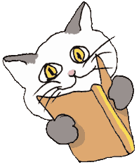

Il Referendum

Andava Fiocco a dare il suo voto
al partito dei cani, tra schiamazzi villani-
Lo seguia gatto Anselmo, cacciatore di ratti
baldanzoso a votare la sua lista di gatti-
Non correa buono pelo fra i due ligi elettori
che s'ignorano loschi con le unghie di fuori-
Arrivati sul posto, ritirata la lista
il cagnaccio già spinge, quasi fosse giù in pista-
Il gattone paziente, prima non se la prende
poi si liscia la schiena e farfuglia fremente-
“Che farà quel cagnaccio, già da un'ora in cabina
a dar voti a quei cani qualunquisti, villani?
Per i gatti si vota, un gran gatto si elegga
che comandi, che pesti quei cagnacci molesti
che sobillan la gente con quel fare demente
leccapiedi ai padroni, ciabattoni, poltroni!
E da gatti si vive e da gatti si muore
libertà fra le zampe, croccantini nel cuore”–
E già esce il cagnaccio, baldanzoso ed allocco
e non vede il gattaccio silenzioso, pitocco
che lo afferra la dove non si vede e si dice
e gli molla il suo voto proprio sulla cervice-
Reagisce Fiocco il mozzicagattare
fra le schede e i votanti gli azzuffati son tanti-
Interviene la legge, votazione annullata
l'incivile gattaccio, lo sfrontato cagnaccio
s'incamminano lenti con la bava fra i denti-
Arrivati al portone si ripestano lesti
forsennati e maldestri-
Fu interpellato quindi nella tarda mattina
il giudice Di Dietro che in quel di Taormina
se la godeva lieto su e giù per l'altalena-
Villeggiava il gaudente, che seccato discese
a rimettere l'ordine a lenire le offese-
Consultati gli appunti, visionate le pene
sentenziò che ciascuno si lavasse per bene
si lavasse la schiena dove il sole non batte
o gli arresti forzati in cantina in ciabatte!!!!!!
M.J.M.
Novembre ‘98

Fiocco: Fiocco nel ruolo di se stesso
Anselmo: Anselmo nel ruolo di se stesso
Giudice Di Dietro: guest star Athos